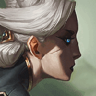

核心裝備
 三相之力
三相之力咒刃與移速最契合一技兩段普攻。
 精進之矛
精進之矛技能加速讓一、三技循環更快，方便多次進退。
 死亡之舞
死亡之舞深入敵陣後降低物理爆發並提高續戰。
 史特拉克手套
史特拉克手套大絕鎖人時提供生命與護盾容錯。
 守護天使
守護天使後期深度進場提供一次復活保險。

Camille · 單點鎖定／真傷收割型物理鬥士
不要急著大絕鎖第一個看到的人。先用二技外圈消耗與回血，等敵方核心走位靠前再三技貼牆進場；大絕最好拿來隔離後排或躲關鍵技能，二段一技延遲打出真傷才是主要爆發。
本站評級理由：卡蜜兒在 ARAM 能用大絕把關鍵目標鎖在原地，二段一技真傷也能有效處理前排；6.1f 又提高基礎物攻與二技命中外圈的回血。缺點是單線牆體角度有限，三技如果沒有牆可借力會明顯降低進場品質。
目前未找到 7.x 之後仍生效的標準 ARAM 百分比調整，本站以 100%／100% 基準；同步 6.1f 基礎物攻 58→62 與二技外圈命中英雄回血 50%→80%。
咒刃與移速最契合一技兩段普攻。
技能加速讓一、三技循環更快，方便多次進退。
深入敵陣後降低物理爆發並提高續戰。
大絕鎖人時提供生命與護盾容錯。
後期深度進場提供一次復活保險。

物理與普攻威脅高時提高切入容錯。

控制與魔法傷害多時優先。

短距換血時提高傷害、回血與生命成長。

補前期普攻與一技傷害。

提高對低血目標的收割。

攻速讓一技與普攻銜接更順。

三技進場後降低第一輪爆發。

補三技角度、大絕進場與撤退。

長團中黏住後排並拉開第二輪一技。
1 技 > 3 技 > 2 技
主 1 提高主要輸出，次 3 強化位移與暈眩；二技主要作消耗與回血，大絕能點就點。
先用二技外圈打前排回血，三技只在牆體角度清楚時使用。不要無視隊友距離直接大絕鎖後排。
三相成形後二段一技真傷威脅很高。三技命中後先打一技第一段，延遲後再補第二段，不要把真傷窗口浪費掉。
大絕優先隔離敵方主輸出或躲掉關鍵技能。有守護天使時可以深切，沒有時則以反開與收割為主。
 殞落王者之劍
殞落王者之劍高生命前排多時提高持續輸出。
 自然之力
自然之力敵方法術持續傷害高時補魔抗與移速。
 致死宣告
致死宣告高回復陣容時補重創。
看遊戲卡片下方分類 → 點相同分類 → 看左側 S+／S／A。
一、三技能與大絕都決定單點切入品質，技能循環越快越容易打出第二輪。
三技能鉤鎖提供高價值位移，身法增幅能直接提高進場後收益。
一技能本質是強化普攻，技能後普攻型增幅與二段真傷節奏非常契合。
三技能命中可限制目標，大絕也能把核心困在區域內，控制卡有實戰價值。
被動能穩定取得適應性護盾，護盾免控與護盾真傷都能提高單挑。
技能普攻循環、處刑與施放大絕保命類單卡能提高隔離後勝率。
v80.18.0 ARAM B 第一批：同步卡蜜兒 6.1f 基礎物攻與二技回血增強，並依 7.2b 現行鬥士裝備整理。
ARAM 使用獨立於召喚峽谷的資料集；本站會把官方模式平衡、單線 5v5 特性與出裝／符文適配分開判斷，而不是直接複製峽谷配置。